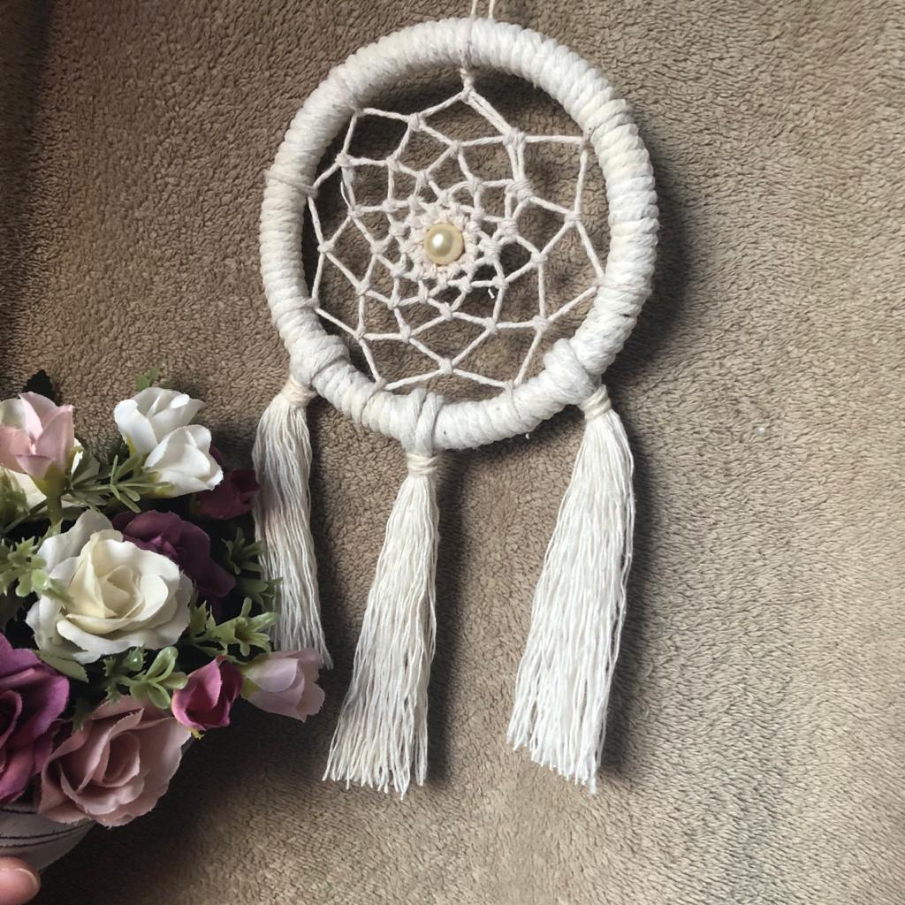
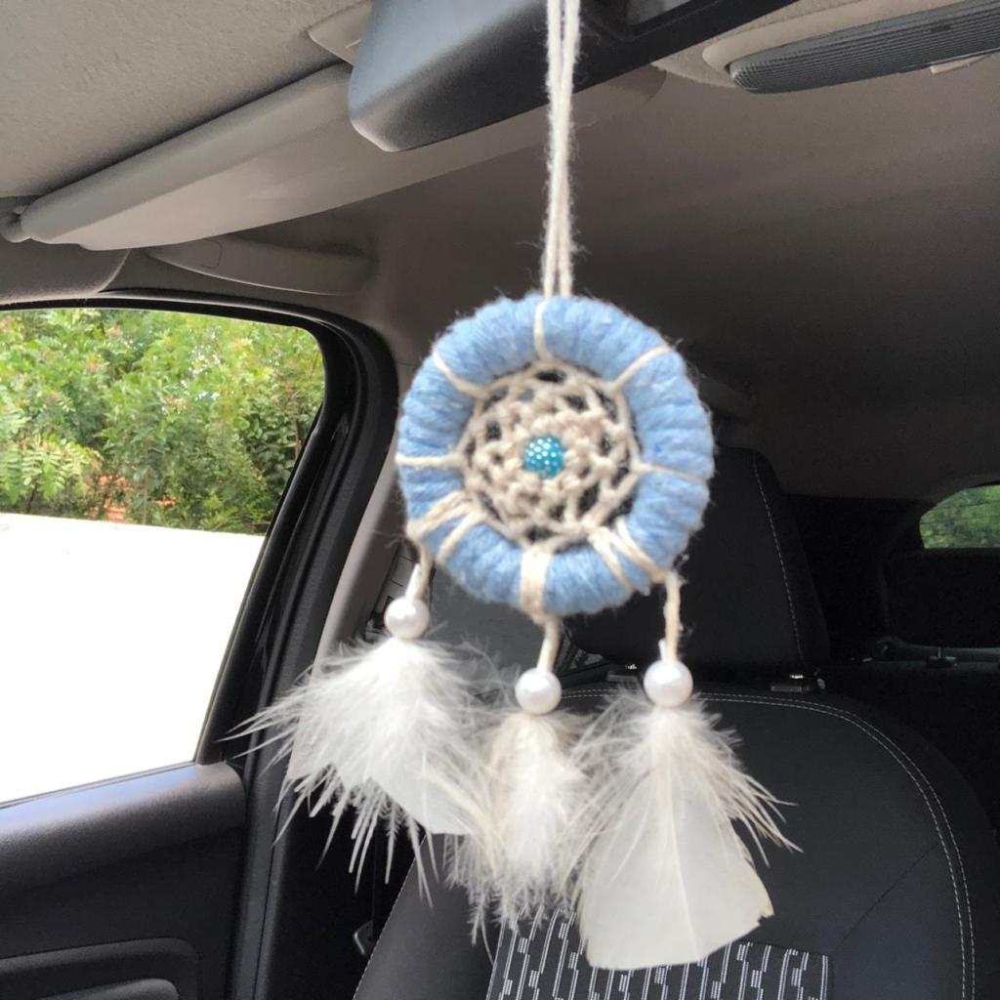

Filtros dos Sonhos
Um pouco sobre o filtro dos sonhos:Desde filtros para carro até grandes para o seu ambiente. São confeccionados de acordo com as cores de preferência do cliente, desde o aro até as penas ou enfeites. |
|||
|  |  |
Valores:Os valores variam de acordo com o tamanho, entre R$8,00 e R$20,00 reais. |